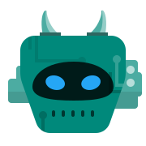
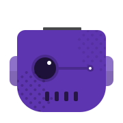

Free
$0
For one person trying Atlas on their own work.
- Open source under AGPL-3.0
- One agent per task
- 7 ready-made agents
- Runs on your machine


Introducing
Hand it the work. Get it back delivered.
100
tasks delivered. Not 100 conversations.
No new AI subscription.
Atlas runs on the plan you already pay for, within its limits.
We use Atlas to deliver our own work. Write what you need, and it plans, builds, checks and delivers, using the AI subscription you already pay for.

For engineering teams, free to start, running on your own systems.
Atlas is our flagship product. We run our own delivery on it, and now your team can too, using the AI subscription you already pay for.
This is the real Atlas delivery workflow. Every step has a specialist, and work only moves on once it passes. Select a step to see who does it.
Same request, two routes. One waits at every hand-off. The other splits the work, builds it in parallel, checks everything and delivers.
RequestAdd GST invoices to the merchant app
Ready
2 hand-offs, 1 queue, 1 rework loop
Ready
No hand-offs, queues or rework
Illustrative timeline, not to scale.
A lean senior team steering specialised agents.
Instead of a large team, with every role staffed for the whole project.
Each step starts the moment the previous one is ready, and independent work runs in parallel.
Instead of work waiting in a queue between every role.
Every change is checked automatically and reviewed before it is delivered. Anything that fails is fixed and checked again, and anything unclear goes to a person.
Instead of testing near the end, mostly by hand.
AI effort matched to each task, with nothing spent where it is not needed.
Instead of the same expensive AI for every task, or no AI at all.
Cost, speed and quality of every delivery, tracked live.
Instead of weekly status reports.
Every decision and change is recorded with the work, so nothing lives only in someone's head.
Instead of know-how that leaves when people do.
Atlas comes with 24 specialists and 6 workflow templates. Pick a kind of work to see who steps in. In delivery workflows, each maker is paired with a reviewer, so nothing passes on its own say-so.
Chatting with AI means explaining, checking and copying the result across yourself. Atlas gives you one list, and each item comes back finished.
Conversation 1 of 100
Illustration. Atlas works one task at a time per repository, and real speed depends on your code, your checks and your AI plan.
Each item runs on the AI you already pay for, and comes back finished for your approval.
92 of 100 ready for your approval
Illustration. Real speed depends on your code, your checks and your AI plan.
Atlas has no AI of its own, and it doesn't resell any. Your work runs under your own sign-in, on your own computers.
Real Atlas screens.


Atlas runs on your own server, with the controls a company expects.
Most AI work tools bundle the AI into the price. Atlas doesn't, so you pay for the delivery system and keep the subscription you have.
| A person directs the work | Finished work comes back | |
|---|---|---|
| Your own AI subscription | Parallel agent toolsFree to about $60 per user a month. Several agents at once, and you still direct each one. | AtlasFree to start, then $19 per user a month. Planned, built, checked and delivered, on your own systems. |
| AI bundled into the price | AI coding assistantsAbout $20 to $40 per user a month. Help for a developer, one conversation at a time. | Autonomous coding agentsAbout $40 per seat, plus a team fee and usage. Finished changes, on the vendor's cloud. |
| Type of tool | Typical cost | Where the AI comes from | What you get |
|---|---|---|---|
| AI coding assistants | About $20 to $40 per user a month | Bundled, and heavy use can cost extra | Help for a developer, one conversation at a time |
| Autonomous coding agents | About $40 per seat, plus a team fee and usage | Bundled and metered | Finished changes, on the vendor's cloud |
| Parallel agent tools | Free to about $60 per user a month | Your own subscription | Several agents at once, and you still direct each one |
| Enterprise agent builders | About $500 to $6,000 or more a month, or usage credits | Bundled | Business process automation, not software delivery |
| Atlas | Free to start, then $19 per user a month | Your own subscription | Planned, built, checked and delivered, on your own systems |
Typical public list prices by type of tool, October 2026. Prices change, and each vendor's own page has the current figure.
The same month of work, three ways: a team doing it by hand, people iterating with AI tools on their own, and Atlas. Atlas records the cost of every step, failed ones included.
Engineers write, test and review by hand
$0cost a month
0 daysper change, request to delivery
Each engineer prompts AI tools on their own, then checks and fixes the result
$0cost a month
0 daysper change, request to delivery
Agents deliver, checks run automatically, an engineer steers and signs off
$0cost a month
0 daysper change, request to delivery
A mix of measured and estimated values, not a quote. The Atlas AI cost and run time are measured: in our internal benchmark, 12 representative requests were run end to end on sample repositories. 11 were delivered and 1 stopped for a person by design. Runs took 17 to 78 minutes, at an average of $11.75 per delivered change. Engineer time, the AI spend of people iterating on their own and the rework rate are our estimates from typical projects. Every option is priced at a blended engineer rate of $400 a day. Turnaround is working days from request to delivery for one change.
Start free on your own machine. Choose the Team plan when a whole team needs to work together.
| Feature | Free | Team |
|---|---|---|
| Licence | Open source (AGPL-3.0) | Commercial |
| Who uses it | One person, on their own machine | Your whole team, on one shared server |
| How a task runs | One agent does the whole task | A chain of specialist agents, each checking the last |
| Ready-made agents | 7 | 24, including 18 for software delivery |
| Workflows | Not included | 6 templates and a visual builder |
| Checks before delivery | Left to the agent | Atlas runs your checks itself. A check that couldn't run never counts as a pass |
| After delivery | Not included | If GitHub checks fail, up to 2 automatic fix attempts |
| Work side by side | One agent at a time | Up to 10 runs per workflow once configured, across different repositories |
| Sign-in | Not needed | Single sign-on through OpenID Connect, or email and password |
| Roles | Not needed | Admin or member across the organisation. Admin, member or viewer on each project |
| Audit log | Not included | Sign-ins, secret views, role changes, and runs started or stopped |
| Analytics | The basics | Delivery, workflow and spend, with spend by reporting line |
| Connects to | GitHub, Jira Cloud, Teams and Telegram alerts | GitHub, Jira Cloud, Teams and Telegram alerts |
| Support | Community, on GitHub | Direct from SSPART |
$0
For one person trying Atlas on their own work.
$19per user a month
For teams. $15 per user a month when billed annually.
Let's talk
For organisations with their own security, hosting or integration needs.
Prices are in US dollars and exclude taxes. Your AI subscription is separate: each person uses their own Claude or GitHub Copilot plan, and Atlas work counts against that plan's limits.
No. Atlas runs Claude Code or GitHub Copilot under each person's own sign-in, or models through Ollama, and you choose which one each agent uses. You keep paying your AI provider directly, and Atlas work counts against that plan's limits.
Your team does. Atlas raises each finished change as a pull request and a person approves it. Atlas doesn't merge changes by itself.
Not in one repository. Atlas works on one task at a time per repository and queues the rest, so changes don't collide. Tasks in different repositories can run side by side, up to the limit you set for each workflow.
Atlas runs on one server in your organisation, using Docker and Postgres. Each person also runs a small Atlas runner on their own computer, where their agents work. A task needs its owner's runner to be online. You also add your own lint, build and test commands to the workflow, so Atlas can run them.
No. Atlas runs on your systems, and your code goes only to the AI provider you choose. There's no third-party analytics in the app. Online licences send us a daily usage count, such as active users and version, and offline licences are available.
GitHub.com, Jira Cloud, and alerts to Microsoft Teams and Telegram. If you use something else, tell us and we'll scope it with you.
Yes. It's open source under the AGPL-3.0 licence, and you only need your own AI subscription, or local models through Ollama, to run it.
Atlas isn't a shared hosted service. We can set it up in your own cloud account as an Enterprise project.